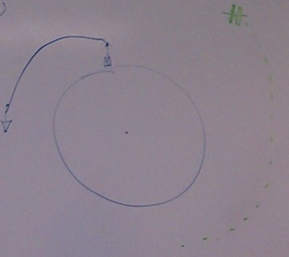
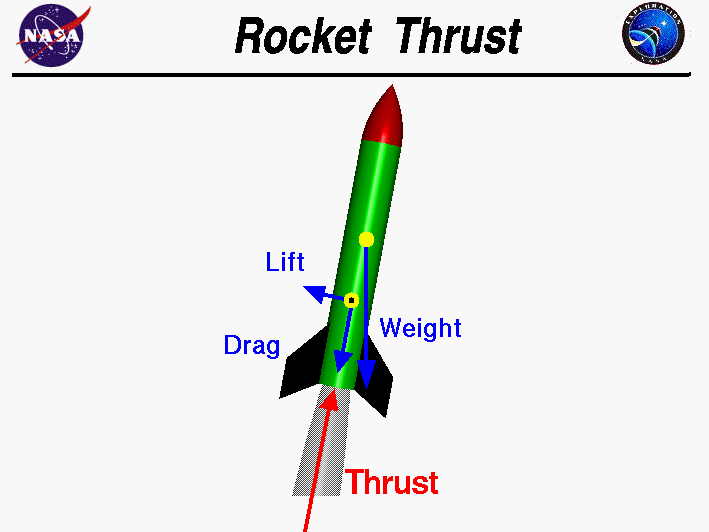

Model: Mass point dynamics with constant area drag force
Reference frame: Inertial frame centered at center of earth

Gravity $\mathbf {G}$
\begin{equation} \mathbf G=-\frac{G m}{r^3}\mathbf r\end{equation}
Thrust $\mathbf {T}$
\begin{equation} \mathbf T=v_e \cdot \frac{dm}{dt} \hat{\mathbf t}= g_0 \cdot I_{sp} \cdot \frac{dm}{dt} \hat{\mathbf t}\end{equation}
$\hat{\mathbf t}$ is the thrust direction unit vector
Drag $\mathbf {D}$
\begin{equation} \mathbf {D}= \begin{cases} \mathbf {D}_1, & \mbox{if } v<=500 \frac{km}{h} \\ \mathbf {D}_2, & \mbox{if } v>500 \frac{km}{h} \end{cases}\end{equation}
Drag $\mathbf {D}_1 = - \frac{1}{2} \rho C_d A v^3 \hat{\mathbf v}$
The lift is treated as being neglectable, since thrust direction adjustments will be made very slowly, and the axis of the rocket will be close to parallel to the velocity vector
The total force acting on the rocket is
\begin{equation} \mathbf F = \mathbf G + \mathbf T + \mathbf D \end{equation}
The equations of motion (EOM) can be obtained from Newton's second law:
\begin{equation} \mathbf F = m \cdot \mathbf a \end{equation}
so
\begin{equation} a=\frac{\mathbf F}{m} =\frac{1}{m}( \mathbf G + \mathbf T + \mathbf D) \end{equation}
The ascent of the rocket will be controlled by varying the thrust direction
Thrust direction $\hat{\mathbf t} $
and within some limits, the thrust
Thrust $T= \vert \mathbf T \vert $ where $\dot{m}_{low}< \frac{dm}{dt}< \dot{m}_{high}$
The state vector that will be propagated in time in the simulation consists of
\begin{equation} \mathbf{x}(t) = \begin{bmatrix} \mathbf{r}(t) \\ \mathbf{v}(t) \\ m(t) \end{bmatrix} \end{equation}
The launch occurs at Kennedy Space Center (KSC) which has the coordinates
28°36′30.23″N 80°36′15.64″W
\begin{equation} \mathbf{ r_0}=\mathbf{ r}(t_0) \end{equation}
\begin{equation} \mathbf{ v_0}=\mathbf{ v}(t_0) \end{equation}
\begin{equation} m_0=m(t_0) \end{equation}
The vehicle will be transported to the orbit of the space station. The goal of the ascent is not an immediate rendezvous with the space station. Moving within an orbit does not cost a large amount of energy, and it is safer for the mission to target a true anomaly that is sufficiently far away from the space station. The true anomaly of the ascent can be chosen by chosing the launch time and waiting until the space station is in an appropriate position.
Therefore, the final state is an implicit condition where the orbital elements of the vehicle match the orbital elements of the ISS orbit.
Final state of state vector:
\begin{equation} \mathbf{ r_f}=\mathbf{ r}(t_f) \end{equation}
\begin{equation} \mathbf{ v_f}=\mathbf{ v}(t_f) \end{equation}
\begin{equation} m_f=m(t_f) \end{equation}
Target orbit elements:
\begin{equation} a(\mathbf{r}_f,\mathbf{r}_f,m_f)=a_{ISS} \end{equation}
\begin{equation} e(\mathbf{r}_f,\mathbf{r}_f,m_f)=e_{ISS} \end{equation}
\begin{equation} i(\mathbf{r}_f,\mathbf{r}_f,m_f)=i_{ISS} \end{equation}
\begin{equation} \Omega(\mathbf{r}_f,\mathbf{r}_f,m_f)=\Omega_{ISS} \end{equation}
\begin{equation} \omega(\mathbf{r}_f,\mathbf{r}_f,m_f)=\omega_{ISS} \end{equation}